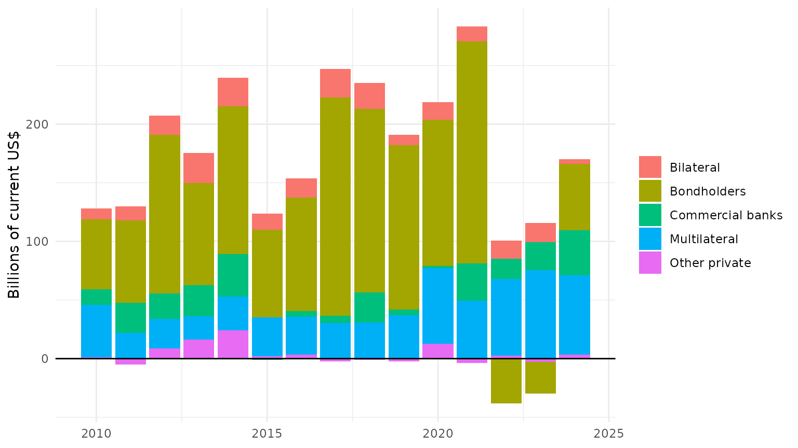
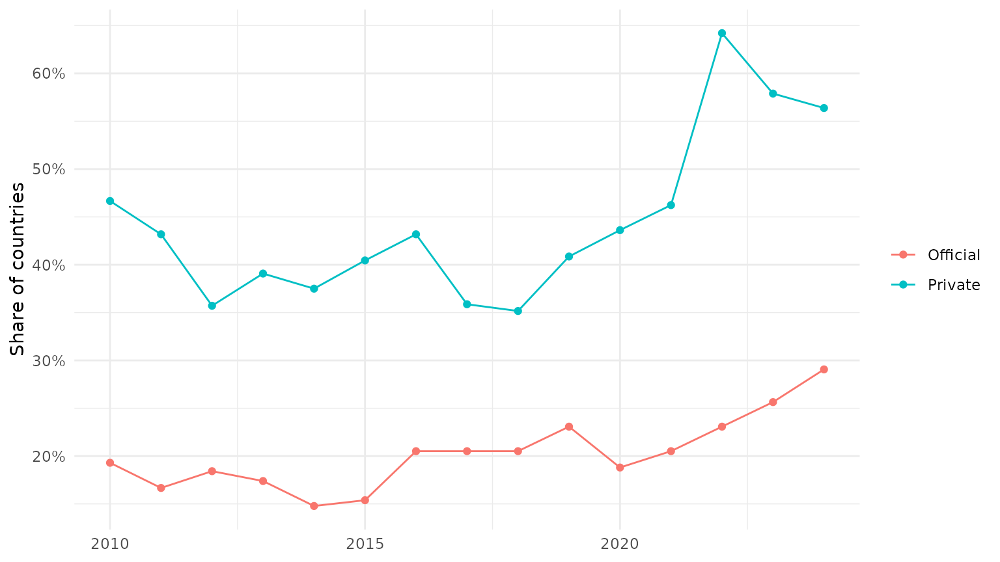

Who Still Lends to Developing Countries?
Source:vignettes/articles/wbids-net-flows.Rmd
wbids-net-flows.RmdThe question
How have net debt flows to low- and middle-income countries changed by creditor type, and did private creditors pull out after 2022? Rising interest rates in 2022 made new borrowing more expensive, while existing debt still had to be repaid. If private lenders stopped refinancing maturing debt, governments would have paid more to private creditors than they received. The World Bank’s International Debt Report 2024 describes such a retreat of private lenders and a growing role for multilateral creditors.
This article uses econdatasets::ed_get() to download the
World Bank’s International Debt Statistics (IDS), aggregate net flows by
creditor type, and test whether negative net flows from private
creditors became more common after 2022. The exercise describes flows on
public external debt; it does not identify why lenders or borrowers
changed their behavior.
Download the IDS data
The debt_statistics table is in long format: each row is
one borrower, series, creditor, and year. The full table is large (about
110 MB to download and several GB in memory), so we request only the
five columns needed for this analysis. The entities table
adds country names, regions, and income levels.
Prepare net flows by creditor type
Net flows are disbursements minus principal repayments on public and publicly guaranteed (PPG) external debt. A negative value means that a country repaid more principal to a creditor type than it received in new loans. We keep five series that split net flows by creditor type and group them into official creditors (multilateral and bilateral) and private creditors (bondholders, commercial banks, and other private). Values are converted to billions of current US dollars.
creditor_types <- c(
"DT.NFL.MLAT.CD" = "Multilateral",
"DT.NFL.BLAT.CD" = "Bilateral",
"DT.NFL.PBND.CD" = "Bondholders",
"DT.NFL.PCBK.CD" = "Commercial banks",
"DT.NFL.PROP.CD" = "Other private"
)
income_levels <- c("Low income", "Lower middle income", "Upper middle income")
net_flows <- debt_statistics |>
filter(
series_id %in% names(creditor_types),
counterpart_id == "WLD",
between(year, 2010, 2024)
) |>
mutate(
creditor_type = creditor_types[series_id],
creditor_group = if_else(
creditor_type %in% c("Multilateral", "Bilateral"),
"Official",
"Private"
),
net_flows = value / 1e9
) |>
inner_join(
entities |>
filter(
entity_type == "Country",
income_level_name %in% income_levels
) |>
select(entity_id, entity_name, region_name, income_level_name),
join_by(entity_id)
) |>
mutate(income_level_name = factor(income_level_name, levels = income_levels))
net_flows_group <- net_flows |>
group_by(
entity_id,
entity_name,
region_name,
income_level_name,
year,
creditor_group
) |>
summarize(net_flows = sum(net_flows, na.rm = TRUE), .groups = "drop")Three filters define the sample. counterpart_id == "WLD"
selects flows from all creditors combined rather than from individual
lenders such as China (730). Years run from 2010 to 2024,
because values after 2024 are scheduled payments, not observed flows.
The join with entities keeps only countries, which drops
aggregates such as regions and income groups that would otherwise double
count. The income level is the current World Bank
classification, not the classification at the time of each
observation.
net_flows_group sums the creditor types within each
group for every country and year. Not every country reports every
creditor type in every year; a missing creditor type contributes zero to
the group total.
Describe the sample
sample_summary <- net_flows |>
summarize(
observations = n(),
countries = n_distinct(entity_id),
years = paste(range(year), collapse = "-")
)
knitr::kable(sample_summary, caption = "Net flows sample")| observations | countries | years |
|---|---|---|
| 6276 | 117 | 2010-2024 |
The sample contains 6,276 country-year-creditor-type observations for 117 low- and middle-income countries over 2010-2024. The next table compares 2021, the last year before interest rates rose, with 2023.
flows_2021_2023 <- net_flows_group |>
filter(year %in% c(2021, 2023)) |>
group_by(year, creditor_group) |>
summarize(
total = sum(net_flows),
median = median(net_flows),
share_negative = mean(net_flows < 0),
.groups = "drop"
)
knitr::kable(
flows_2021_2023,
digits = 2,
caption = "Net flows by creditor group (billions of current US$)"
)| year | creditor_group | total | median | share_negative |
|---|---|---|---|---|
| 2021 | Official | 61.98 | 0.13 | 0.21 |
| 2021 | Private | 217.87 | 0.00 | 0.46 |
| 2023 | Official | 92.38 | 0.12 | 0.26 |
| 2023 | Private | -6.34 | 0.00 | 0.58 |
Net flows from private creditors fell from 217.9 billion US$ in 2021 to -6.3 billion US$ in 2023, while net flows from official creditors rose from 62 to 92.4 billion US$. The share of countries with negative private net flows rose from 46% to 58%. The medians are close to zero because many countries borrow little from private creditors; totals are dominated by a few large borrowers.
China is a borrower in this data and dominates bond flows. Its net flows to bondholders were -68.6 billion US$ in 2023. Without China, private net flows were 48.7 billion US$ in 2021 and 42.6 billion US$ in 2023. Most of the drop in the total therefore comes from a single country, which is one reason to also count how many countries face negative flows.
Our totals do not match the International Debt Report. The World Bank Debt Statistics Team (2024) reports that net debt flows from private creditors turned positive in 2023, at 62.4 billion US$. The report also covers private nonguaranteed debt, that is, debt owed by private borrowers without a public guarantee. We use PPG debt only and restrict the sample to countries with a current low- or middle-income classification.
How have net flows changed by creditor type?
net_flows |>
group_by(year, creditor_type) |>
summarize(net_flows = sum(net_flows, na.rm = TRUE), .groups = "drop") |>
ggplot(aes(x = year, y = net_flows, fill = creditor_type)) +
geom_col() +
geom_hline(yintercept = 0) +
labs(
x = NULL,
y = "Billions of current US$",
fill = NULL
) +
theme_minimal()
Net flows on public and publicly guaranteed external debt by creditor type, summed over low- and middle-income countries.
Bondholders were the largest source of net flows in most years until 2021. In 2022 and 2023, bond flows turned negative, and multilateral creditors became the largest net lender. Bond flows recovered in 2024. Commercial banks and bilateral creditors contribute smaller amounts throughout; the bars for these types stay comparatively short in every year.
How many countries face negative net flows?
net_flows_group |>
group_by(year, creditor_group) |>
summarize(share_negative = mean(net_flows < 0), .groups = "drop") |>
ggplot(aes(x = year, y = share_negative, color = creditor_group)) +
geom_line() +
geom_point() +
scale_y_continuous(labels = scales::percent) +
labs(
x = NULL,
y = "Share of countries",
color = NULL
) +
theme_minimal()
Share of low- and middle-income countries with negative net flows, by creditor group.
The share of countries with negative private net flows is higher than the share with negative official net flows in every year. It jumps in 2022 and stays above its 2010-2021 range through 2024. The share with negative official net flows also rises after 2022, but less steeply. Countries with no private debt in a given year have net flows of zero and count as non-negative.
Did private creditors pull out after 2022?
To test whether the shift after 2022 is systematic, we regress an
indicator for negative private net flows on an indicator for 2022 and
later. The coefficient on post_2022 is the change in the
probability that a country has negative private net flows, measured in
percentage points when multiplied by 100. Model 1 compares the two
periods across all countries. Model 2 lets the change differ by income
level, with low-income countries as the reference category. Model 3 adds
country fixed effects, comparing each country with itself before and
after 2022. Standard errors are clustered by country.
regression_data <- net_flows_group |>
filter(creditor_group == "Private") |>
mutate(
negative_flows = as.integer(net_flows < 0),
post_2022 = as.integer(year >= 2022)
)
setFixest_dict(c(
entity_id = "Country",
negative_flows = "Negative Private Net Flows",
post_2022 = "Post 2022",
income_level_name = "Income Level",
"income_level_nameLower middle income" = "Lower middle income",
"income_level_nameUpper middle income" = "Upper middle income"
))
clusters <- ~entity_id
models <- list(
"Post 2022" = feols(
negative_flows ~ post_2022,
regression_data,
vcov = clusters
),
"+ Income Level" = feols(
negative_flows ~ post_2022 * income_level_name,
regression_data,
vcov = clusters
),
"+ Country FE" = feols(
negative_flows ~ post_2022 | entity_id,
regression_data,
vcov = clusters
)
)
knitr::kable(
etable(models, coefstat = "tstat", tex = FALSE),
caption = "Negative private net flows regressions; t-statistics shown"
)| Post 2022 | + Income Level | + Country FE | |
|---|---|---|---|
| Dependent Var.: | Negative Private Net Flows | Negative Private Net Flows | Negative Private Net Flows |
| Constant | 0.4067*** (14.12) | 0.5985*** (9.199) | |
| Post 2022 | 0.1884*** (4.822) | -0.0747 (-0.6725) | 0.2191*** (5.856) |
| Lower middle income | -0.2412** (-3.130) | ||
| Upper middle income | -0.2027* (-2.594) | ||
| Post 2022 x Lower middle income | 0.2850* (2.217) | ||
| Post 2022 x Upper middle income | 0.3202** (2.633) | ||
| Fixed-Effects: | ————————– | ————————– | ————————– |
| Country | No | No | Yes |
| _______________________________ | __________________________ | __________________________ | __________________________ |
| VCOV: Clustered | by: Country | by: Country | by: Country |
| Observations | 1,361 | 1,361 | 1,359 |
| R2 | 0.02372 | 0.04363 | 0.33842 |
| Within R2 | – | – | 0.04471 |
In Model 1, the probability of negative private net flows is 19 percentage points higher from 2022 onward, compared with 41% before. Model 3 gives a similar estimate of 22 percentage points within countries, so the shift also holds when each country is compared only with itself.
Model 2 shows that the shift is concentrated in middle-income countries. For low-income countries, the change is -7 percentage points and not statistically significant at the 5% level. The implied change is 21 percentage points for lower-middle-income countries and 25 for upper-middle-income countries. Low-income countries already had negative private net flows more often before 2022, as the negative income-level coefficients for middle-income countries show. All coefficients describe associations, not causal effects of higher interest rates.
What have we learned?
With ed_get() and a short analysis pipeline, we can
track who lends to developing countries. On public external debt,
private net flows fell sharply in 2022 and 2023 while multilateral
creditors increased their lending. The aggregate drop is driven largely
by China’s bond repayments, but the country count shows a broader
retreat: from 2022 onward, more middle-income countries repaid more to
private creditors than they received. The exercise has three limits: it
covers PPG debt only, it uses current income classifications, and net
flows do not include interest payments, so they understate what
countries pay to their creditors.
For further background, see World Bank (2024) and the World Bank Debt Statistics Team (2024).